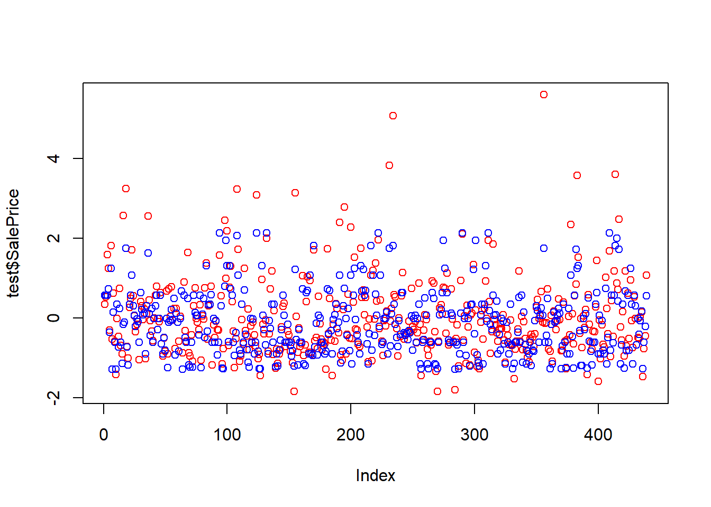

1. Lectura Dataset
datos <- read.csv("train.csv")
datos <- datos[ , !(names(datos) %in% c("Id","YrSold","MoSold","GarageYrBlt","MSSubClass","YearBuilt"))]
Cuantitativas <- c("SalePrice", "LotFrontage", "LotArea", "OverallQual", "OverallCond", "MasVnrArea", "BsmtFinSF1", "BsmtFinSF2", "BsmtUnfSF", "TotalBsmtSF", "X1stFlrSF", "X2ndFlrSF", "LowQualFinSF", "GrLivArea", "BsmtFullBath", "BsmtHalfBath", "FullBath", "HalfBath", "BedroomAbvGr", "KitchenAbvGr", "TotRmsAbvGrd", "Fireplaces", "GarageCars", "GarageArea", "WoodDeckSF", "OpenPorchSF", "EnclosedPorch", "X3SsnPorch", "ScreenPorch", "PoolArea", "MiscVal")
df_cuantitativas <- datos[Cuantitativas] datos$LotFrontage[is.na(datos$LotFrontage)] <- median(datos$LotFrontage, na.rm = TRUE)
datos$MasVnrArea[is.na(datos$MasVnrArea)] <- median(datos$MasVnrArea, na.rm = TRUE)
datos <- datos[ , !(names(datos) %in% c("Alley", "PoolQC", "Fence", "MiscFeature","FireplaceQu"))]
df_cuantitativas <- datos[Cuantitativas] #Tras los cambios de Na´s
df_norm <- mutate_if(datos, is.numeric, scale)
df_cualitativas <- df_norm[ , !(names(df_norm) %in% Cuantitativas)]
for (i in 1:ncol(df_cualitativas)) {
df_norm[,i] <- ifelse(is.na(df_norm[,i]), "Desconocido", df_norm[,i])
}
df_norm <- df_norm %>% mutate_at(colnames(df_cualitativas), function(x) as.factor(x))1.1 Creacion de nueva variable Classification
salePrices <- df_norm$SalePrice
q1 <- quantile(df_norm$SalePrice, 0.33)
q2 <- quantile(df_norm$SalePrice, 0.66)
df_norm$Classification <- sapply(df_norm$SalePrice, function(x) ifelse(x < q1, "Economicas", ifelse(x < q2, "Intermedias", "Caras")))
df_norm$Classification <- factor(df_norm$Classification)1.2 Dividir el dataset en train y test
set.seed(123)
porcentaje<-0.7
corte <- sample(nrow(df_norm),nrow(df_norm)*porcentaje)
train<-df_norm[corte,]
test<-df_norm[-corte,]
test1 <- test[ , !(names(test) %in% c("SalePrice"))]
test2 <- test[ , !(names(test) %in% c("Classification"))]Para poder crear la nueva variable Classification, primero se obtuvieron los cuartiles de la variable SalePrice , y se crearon 3 categorias, las cuales son Economicas, Intermedias y Caras. Luego se creó una nueva variable Classification, la cual se llenó con la función sapply, la cual recorre cada valor de la variable SalePrice y dependiendo del valor de la variable SalePrice, se le asigna la categoria correspondiente. Por ultimo se convirtió la variable Classification a factor.
2 Creación del modelo de regresión usando Naive Bayes
nb <- naiveBayes(SalePrice ~ ., data = train)
nb_pred_r<-predict(nb, newdata = test1)
nb_pred_r<- as.numeric(as.character(nb_pred_r))
plot(test$SalePrice, col="red")
points(nb_pred_r, col="blue")
SSE <- sum((test$SalePrice-nb_pred_r)^2, na.rm = T)
TSS <- sum((test$SalePrice-mean(test$SalePrice))^2, na.rm = T)
R2 <- 1-SSE/TSSEl R^2 del modelo es de 0.6990113
3 Creación del modelo de clasificación usando Naive Bayes
nb <- naiveBayes(train$Classification ~ ., data = train)4 Prediga con el modelo de clasificación usando Naive Bayes
nb_pred_c<-predict(nb, newdata = test2)
cm<-caret::confusionMatrix(nb_pred_c,test$Classification)
cmConfusion Matrix and Statistics
Reference
Prediction Caras Economicas Intermedias
Caras 127 0 12
Economicas 6 136 70
Intermedias 19 4 65
Overall Statistics
Accuracy : 0.7472
95% CI : (0.7038, 0.7872)
No Information Rate : 0.3462
P-Value [Acc > NIR] : < 2.2e-16
Kappa : 0.6222
Mcnemar's Test P-Value : 2.461e-14
Statistics by Class:
Class: Caras Class: Economicas Class: Intermedias
Sensitivity 0.8355 0.9714 0.4422
Specificity 0.9582 0.7458 0.9212
Pos Pred Value 0.9137 0.6415 0.7386
Neg Pred Value 0.9167 0.9824 0.7664
Prevalence 0.3462 0.3189 0.3349
Detection Rate 0.2893 0.3098 0.1481
Detection Prevalence 0.3166 0.4829 0.2005
Balanced Accuracy 0.8969 0.8586 0.6817 recall_score <- Recall(test$Classification, nb_pred_c,positive = c("Caras","Intermedias","Economicas"))5 Analisis de los resultado del modelo de regresion
El modelo de regresión no es muy bueno, ya que el R^2 es de 0.6990113 y un modelo se considera aceptable apartir de 0.75. A pesar de que no es aceptable tampoco es que sea un mal modelo puede predecir la mayoria de los datos. Además si vemos el gráfico de los datos reales y los datos predichos podemos ver que la mayoría de los datos predichos se encuentran cerca de los datos reales. Unicamente se muestran algunos datos que se encuentran muy alejados de los datos reales, pero esto se puede deber a que los datos reales estan sobrevaludados.
6 Compare los resultados de los modelos de regresión con los de las hojas pasadas
Cabe destacar que ningún modelo a llegado a la escala de 0.75, por lo que se puede decir que ninguno de los modelos es aceptable. Esto se puede deber a que los datos al ser precios de casas algunos puden estar sobrevaludados dificultando la predicción. Pero de todos los modelos el este modelo fue el que peor lo hizo. Dentro de los los siguiente modelos: Regresión lineal Multivariable, Arbol de regresión , Regresion Random Forest y Regresión con Naive Bayes el modelo con mejores resultados fue el de Regresión Random Forest con un R^2 de 0.82.
7 Analisis de los resultado del modelo de clasificacion
EL modelo de clasificación es no sobresale entre los otros modelos desarrollados ya que presenta un Accuracy es de 0.8355263.
8 El modelo de clasificación es mejor que el de regresión?
nb <- naiveBayes(train$Classification ~ ., data = train)
train1 <- train[ , !(names(train) %in% c("SalePrice"))]
nb_pred_c<-predict(nb, newdata = train1)Warning in predict.naiveBayes(nb, newdata = train1): Type mismatch between
training and new data for variable 'SalePrice'. Did you use factors with
numeric labels for training, and numeric values for new data? cm1<-caret::confusionMatrix(nb_pred_c,train1$Classification)
cm1Confusion Matrix and Statistics
Reference
Prediction Caras Economicas Intermedias
Caras 285 0 54
Economicas 15 325 172
Intermedias 45 7 118
Overall Statistics
Accuracy : 0.713
95% CI : (0.6842, 0.7406)
No Information Rate : 0.3379
P-Value [Acc > NIR] : < 2.2e-16
Kappa : 0.5708
Mcnemar's Test P-Value : < 2.2e-16
Statistics by Class:
Class: Caras Class: Economicas Class: Intermedias
Sensitivity 0.8261 0.9789 0.3430
Specificity 0.9201 0.7286 0.9232
Pos Pred Value 0.8407 0.6348 0.6941
Neg Pred Value 0.9120 0.9862 0.7344
Prevalence 0.3379 0.3252 0.3369
Detection Rate 0.2791 0.3183 0.1156
Detection Prevalence 0.3320 0.5015 0.1665
Balanced Accuracy 0.8731 0.8538 0.6331 cmConfusion Matrix and Statistics
Reference
Prediction Caras Economicas Intermedias
Caras 127 0 12
Economicas 6 136 70
Intermedias 19 4 65
Overall Statistics
Accuracy : 0.7472
95% CI : (0.7038, 0.7872)
No Information Rate : 0.3462
P-Value [Acc > NIR] : < 2.2e-16
Kappa : 0.6222
Mcnemar's Test P-Value : 2.461e-14
Statistics by Class:
Class: Caras Class: Economicas Class: Intermedias
Sensitivity 0.8355 0.9714 0.4422
Specificity 0.9582 0.7458 0.9212
Pos Pred Value 0.9137 0.6415 0.7386
Neg Pred Value 0.9167 0.9824 0.7664
Prevalence 0.3462 0.3189 0.3349
Detection Rate 0.2893 0.3098 0.1481
Detection Prevalence 0.3166 0.4829 0.2005
Balanced Accuracy 0.8969 0.8586 0.6817